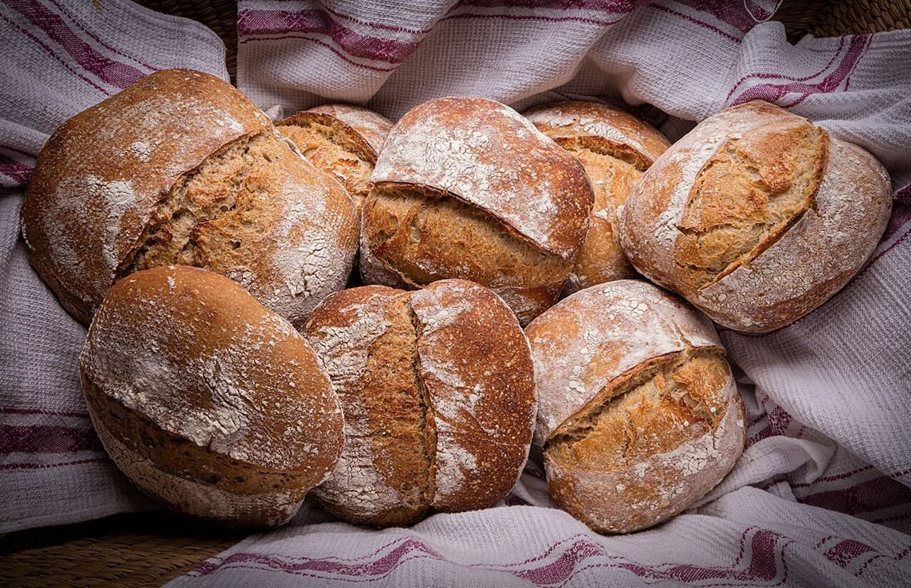
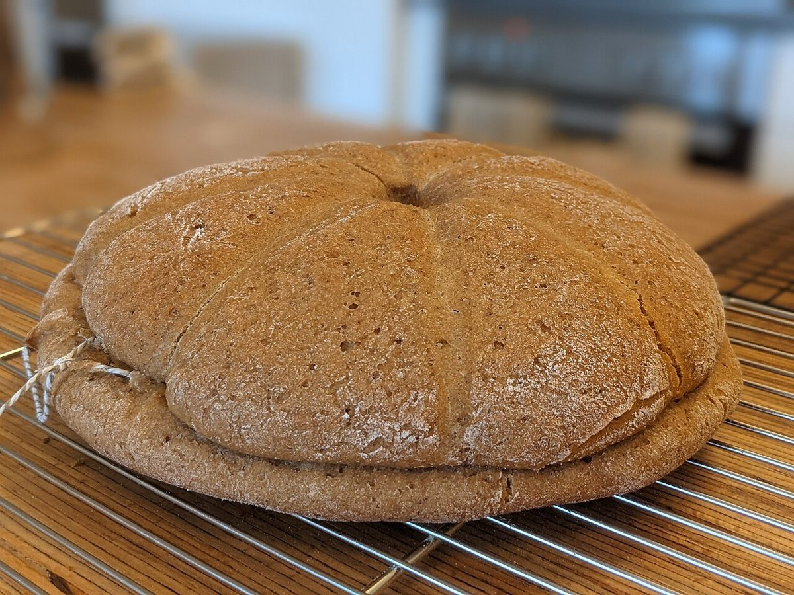

制作側の連想
両端のtにはさまれて
この「二つのtのあいだ」というテーマは、屋号のつづりを見て制作側が連想したものです。お店の理念・由来とは無関係で、屋号の意味や言語は分かりません。つづりを眺めると、はじめと終わりがどちらもtで、その間にaとlが並んでいます。そこでこのサイトは、6文字をひとつずつ区切って見せる作りにしました。
六文字の並び(イメージ)
t・a・l・a・a・t
写真はパンのイメージを文字ごとに割り当てたフリー素材で、出雲市やお店のものではなく、お店の商品とも関係ありません。
- t

撮影地不明のイメージ - a

撮影地不明のイメージ - l

撮影地不明のイメージ - a

撮影地不明のイメージ - a

国外のイメージ(スウェーデン) - t

国外のイメージ(ドイツ)